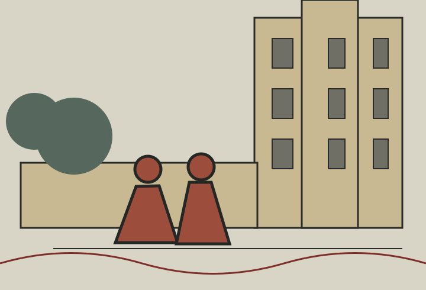
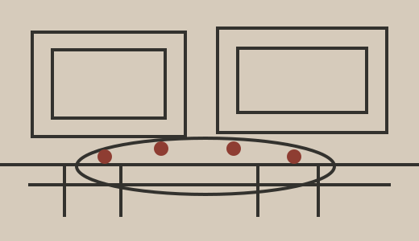
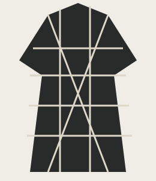
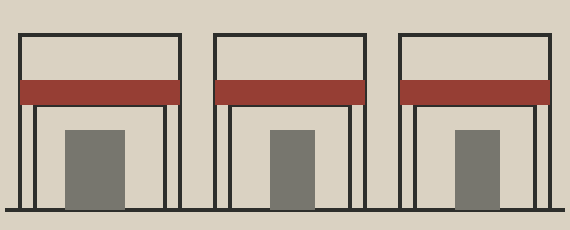

Eat
Corner tables, perfect bagels, and old dining rooms.
THE WEDDING OF
NEW YORK, NEW YORK
SEPTEMBER 21, 2024
YOU ARE CORDIALLY INVITED TO CELEBRATE
Together with their families
invite you to join them for
dinner, drinks and dancing.

DEAR FRIENDS & FAMILY
We are delighted to invite you to celebrate our wedding.
Saturday, September 21
Six o’clock
New York City
Sophie & Ken
THE MAIN EVENT

It began, as the best things often do, by chance. One conversation became another, then dinners, long walks, and a life built together in New York.
These are a few scenes from the years between our first hello and this celebration.

AN ESSENTIAL WINTER LAYERA weekend is never enough, but it is a fine place to start. Here are the corners, tables, and neighborhood institutions we return to again and again.
GETTING HERE
Fly into JFK, LaGuardia, or Newark. A yellow cab remains the most civilized introduction to the city.
For trains and subways, tap any credit card at the turnstile.
GETTING AROUND
Uptown means north. Downtown means south. Comfortable shoes mean happiness.
Dress with spirit. Think festive, elegant, and ready for a crowded dance floor.

Cocktail attire with personality. Bring shoes you can dance in.
Your invitation will indicate the guests included in your party.
All weekend venues are easily reached by subway, taxi, or on foot.
We love your little ones, but our celebration will be an adults-only evening.
We recommend staying in lower Manhattan or Brooklyn.
Make a weekend of it. We have gathered a short list of places worth your time.
Corner tables, perfect bagels, and old dining rooms.
Martinis, natural wine, and somewhere with a good jukebox.
Museums, bookstores, the river, and a very long walk.
Please respond by August 10, 2024.